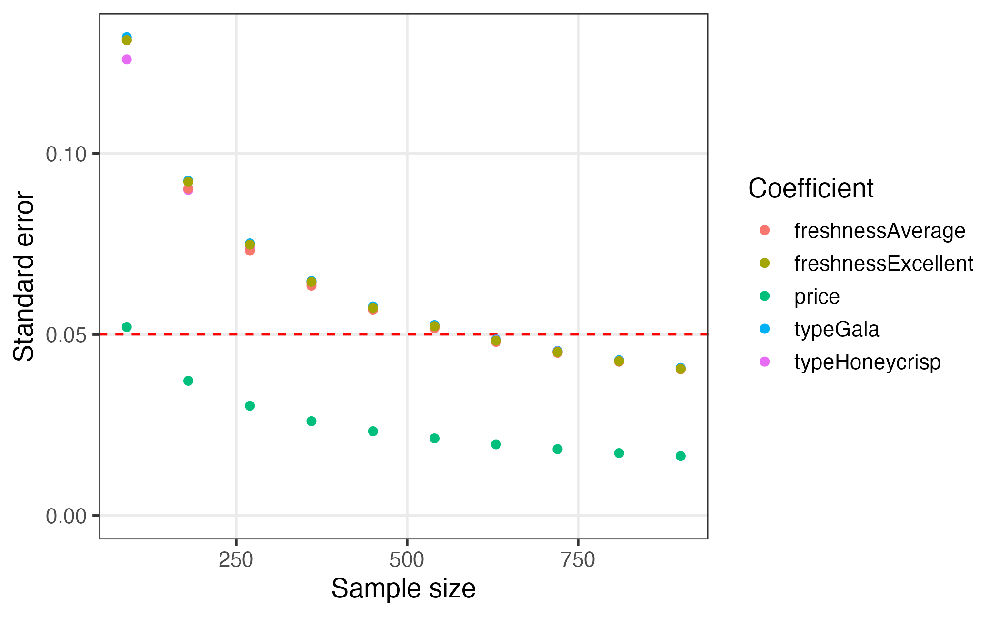
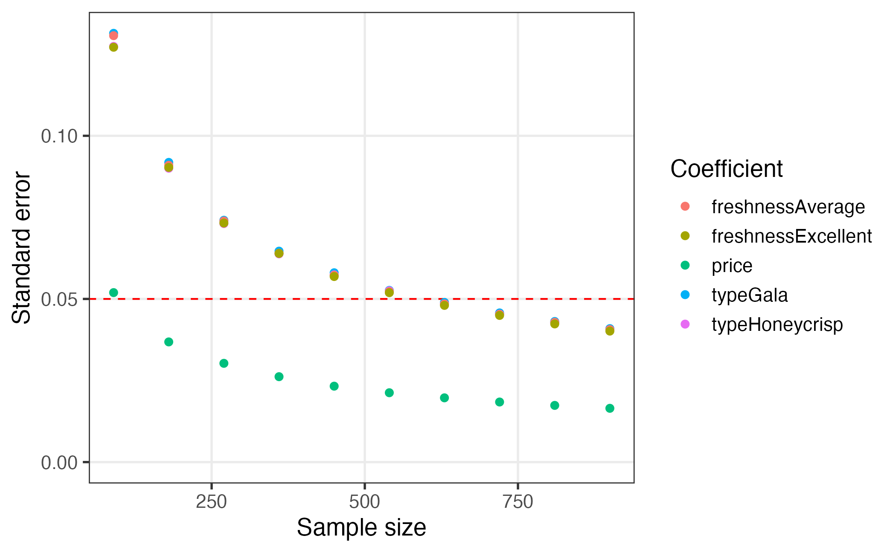

This package provides a set of tools for designing surveys and conducting power analyses for choice-based conjoint survey experiments in R. Each function in the package begins with cbc_ and supports a step in the following process for designing and analyzing surveys:

This guide walks through each step of this design process.
Generate profiles
The first step in designing an experiment is to define the attributes and levels for your experiment and then generate all of the profiles of each possible combination of those attributes and levels. For example, let’s say you’re designing a conjoint experiment about apples and you want to include price, type, and freshness as attributes. You can obtain all of the possible profiles for these attributes using the cbc_profiles() function:
library(cbcTools)
profiles <- cbc_profiles(
price = seq(1, 4, 0.5), # $ per pound
type = c('Fuji', 'Gala', 'Honeycrisp'),
freshness = c('Poor', 'Average', 'Excellent')
)
nrow(profiles)
#> [1] 63
head(profiles)
#> profileID price type freshness
#> 1 1 1.0 Fuji Poor
#> 2 2 1.5 Fuji Poor
#> 3 3 2.0 Fuji Poor
#> 4 4 2.5 Fuji Poor
#> 5 5 3.0 Fuji Poor
#> 6 6 3.5 Fuji Poor
tail(profiles)
#> profileID price type freshness
#> 58 58 1.5 Honeycrisp Excellent
#> 59 59 2.0 Honeycrisp Excellent
#> 60 60 2.5 Honeycrisp Excellent
#> 61 61 3.0 Honeycrisp Excellent
#> 62 62 3.5 Honeycrisp Excellent
#> 63 63 4.0 Honeycrisp ExcellentDepending on the context of your survey, you may wish to eliminate or modify some profiles before designing your conjoint survey (e.g., some profile combinations may be illogical or unrealistic). WARNING: including hard constraints in your designs can substantially reduce the statistical power of your design, so use them cautiously and avoid them if possible.
If you do wish to set some levels conditional on those of other attributes, you can do so by setting each level of an attribute to a list that defines these constraints. In the example below, the type attribute has constraints such that only certain price levels will be shown for each level. In addition, for the "Honeycrisp" level, only two of the three freshness levels are included: "Excellent" and "Average". Note that both the other attributes (price and freshness) should contain all of the possible levels. When these constraints you can see that there are only 30 profiles compared to 63 without constraints:
profiles <- cbc_profiles(
price = c(1, 1.5, 2, 2.5, 3, 3.5, 4, 4.5, 5),
freshness = c('Poor', 'Average', 'Excellent'),
type = list(
"Fuji" = list(
price = c(2, 2.5, 3)
),
"Gala" = list(
price = c(1, 1.5, 2)
),
"Honeycrisp" = list(
price = c(2.5, 3, 3.5, 4, 4.5, 5),
freshness = c("Average", "Excellent")
)
)
)
nrow(profiles)
#> [1] 30
head(profiles)
#> profileID price freshness type
#> 1 1 2.0 Poor Fuji
#> 2 2 2.5 Poor Fuji
#> 3 3 3.0 Poor Fuji
#> 4 4 2.0 Average Fuji
#> 5 5 2.5 Average Fuji
#> 6 6 3.0 Average Fuji
tail(profiles)
#> profileID price freshness type
#> 25 25 2.5 Excellent Honeycrisp
#> 26 26 3.0 Excellent Honeycrisp
#> 27 27 3.5 Excellent Honeycrisp
#> 28 28 4.0 Excellent Honeycrisp
#> 29 29 4.5 Excellent Honeycrisp
#> 30 30 5.0 Excellent HoneycrispGenerate survey designs
Once a set of profiles is obtained, a conjoint survey can then be generated using the cbc_design() function. A variety of survey designs can be generated, including:
- Random designs
- Labeled designs (a.k.a. “alternative-specific” designs)
- Designs with a “no choice” option (a.k.a. “outside good”)
- Bayesian D-efficient designs
Random designs
The randomized design simply samples from the set of profiles, ensuring that no two profiles are the same in any choice question. The resulting design data frame includes the following columns:
-
profileID: Identifies the profile inprofiles. -
respID: Identifies each survey respondent. -
qID: Identifies the choice question answered by the respondent. -
altID:Identifies the alternative in any one choice observation. -
obsID: Identifies each unique choice observation across all respondents.
design <- cbc_design(
profiles = profiles,
n_resp = 900, # Number of respondents
n_alts = 3, # Number of alternatives per question
n_q = 6 # Number of questions per respondent
)
dim(design) # View dimensions
#> [1] 16200 8
head(design) # Preview first 6 rows
#> profileID respID qID altID obsID price type freshness
#> 1 56 1 1 1 1 4.0 Gala Excellent
#> 2 37 1 1 2 1 1.5 Honeycrisp Average
#> 3 6 1 1 3 1 3.5 Fuji Poor
#> 4 48 1 2 1 2 3.5 Fuji Excellent
#> 5 63 1 2 2 2 4.0 Honeycrisp Excellent
#> 6 20 1 2 3 2 3.5 Honeycrisp PoorLabeled designs (a.k.a. “alternative-specific” designs)
You can also make a “labeled” design (also known as “alternative-specific” design) where the levels of one attribute is used as a label by setting the label argument to that attribute. This by definition sets the number of alternatives in each question to the number of levels in the chosen attribute, so the n_alts argument is overridden. Here is an example labeled survey using the type attribute as the label:
design_labeled <- cbc_design(
profiles = profiles,
n_resp = 900, # Number of respondents
n_alts = 3, # Number of alternatives per question
n_q = 6, # Number of questions per respondent
label = "type" # Set the "type" attribute as the label
)
dim(design_labeled)
#> [1] 16200 8
head(design_labeled)
#> profileID respID qID altID obsID price type freshness
#> 1 49 1 1 1 1 4.0 Fuji Excellent
#> 2 31 1 1 2 1 2.0 Gala Average
#> 3 18 1 1 3 1 2.5 Honeycrisp Poor
#> 4 1 1 2 1 2 1.0 Fuji Poor
#> 5 54 1 2 2 2 3.0 Gala Excellent
#> 6 60 1 2 3 2 2.5 Honeycrisp ExcellentIn the above example, you can see in the first six rows of the survey that the type attribute is always fixed to be the same order, ensuring that each level in the type attribute will always be shown in each choice question.
Designs with a “no choice” option (a.k.a. “outside good”)
You can include a “no choice” (also known as “outside good”) option in your survey by setting no_choice = TRUE. If included, all categorical attributes will be dummy-coded to appropriately dummy-code the “no choice” alternative.
design_nochoice <- cbc_design(
profiles = profiles,
n_resp = 900, # Number of respondents
n_alts = 3, # Number of alternatives per question
n_q = 6, # Number of questions per respondent
no_choice = TRUE
)
dim(design_nochoice)
#> [1] 21600 13
head(design_nochoice)
#> profileID respID qID altID obsID price type_Fuji type_Gala type_Honeycrisp
#> 1 18 1 1 1 1 2.5 0 0 1
#> 2 37 1 1 2 1 1.5 0 0 1
#> 3 38 1 1 3 1 2.0 0 0 1
#> 4 0 1 1 4 1 0.0 0 0 0
#> 5 59 1 2 1 2 2.0 0 0 1
#> 6 55 1 2 2 2 3.5 0 1 0
#> freshness_Poor freshness_Average freshness_Excellent no_choice
#> 1 1 0 0 0
#> 2 0 1 0 0
#> 3 0 1 0 0
#> 4 0 0 0 1
#> 5 0 0 1 0
#> 6 0 0 1 0Bayesian D-efficient designs
A Bayesian D-efficient design can be obtained by providing a list of prior parameters to define an expected prior utility model. These designs are optimized to minimize the D-error of the design given a prior model. The optimization is handled using the {idefix} package. For now, designs are limited to multinomial logit priors (the {idefix} package can generate designs with mixed logit priors). These designs also currently do not support the ability to specify interaction terms in the prior model or use “labeled” designs.
In the example below, the prior model assumes the following parameters:
- 1 continuous parameter for
price - 2 categorical parameters for
type('Gala'and'Honeycrisp') - 2 categorical parameters for
freshness("Average"and"Excellent")
design_db_eff <- cbc_design(
profiles = profiles,
n_resp = 900, # Number of respondents
n_alts = 3, # Number of alternatives per question
n_q = 6, # Number of questions per respondent
priors = list(
price = -0.1,
type = c(0.1, 0.2),
freshness = c(0.1, 0.2)
)
)
dim(design_db_eff)
#> [1] 16200 9
head(design_db_eff)
#> profileID respID qID altID obsID price type freshness blockID
#> 1 1 1 1 1 1 1 Fuji Poor 1
#> 2 37 1 1 2 1 1 Honeycrisp Average 1
#> 3 51 1 1 3 1 1 Gala Excellent 1
#> 4 15 1 2 1 2 1 Honeycrisp Poor 1
#> 5 14 1 2 2 2 1 Gala Poor 1
#> 6 48 1 2 3 2 1 Fuji Excellent 1Bayesian D-efficient designs that include a “no choice” option should set no_choice = TRUE and also define a prior for the “no choice” option using prior_no_choice, e.g.:
design_db_eff_no_choice <- cbc_design(
profiles = profiles,
n_resp = 900, # Number of respondents
n_alts = 3, # Number of alternatives per question
n_q = 6, # Number of questions per respondent
no_choice = TRUE,
priors = list(
price = -0.1,
type = c(0.1, 0.2),
freshness = c(0.1, 0.2)
),
prior_no_choice = -0.1
)
dim(design_db_eff_no_choice)
#> [1] 21600 12
head(design_db_eff_no_choice)
#> profileID respID qID altID obsID price type_Gala type_Honeycrisp
#> 1 43 1 1 1 1 1 0 0
#> 2 31 1 1 2 1 2 1 0
#> 3 15 1 1 3 1 1 0 1
#> 4 NA 1 1 4 1 0 0 0
#> 5 50 1 2 1 2 1 1 0
#> 6 36 1 2 2 2 1 0 1
#> freshness_Average freshness_Excellent no_choice blockID
#> 1 0 1 0 1
#> 2 1 0 0 1
#> 3 0 0 0 1
#> 4 0 0 1 1
#> 5 0 1 0 1
#> 6 1 0 0 1Inspect survey designs
The package includes some functions to quickly inspect some basic metrics of a design.
The cbc_balance() function prints out a summary of the individual and pairwise counts of each level of each attribute across all choice questions:
cbc_balance(design)
#> =====================================
#> Individual attribute level counts
#>
#> price:
#>
#> 1 1.5 2 2.5 3 3.5 4
#> 2267 2389 2303 2278 2255 2315 2393
#>
#> type:
#>
#> Fuji Gala Honeycrisp
#> 5374 5367 5459
#>
#> freshness:
#>
#> Poor Average Excellent
#> 5389 5433 5378
#>
#> =====================================
#> Pairwise attribute level counts
#>
#> price x type:
#>
#> Fuji Gala Honeycrisp
#> NA 5374 5367 5459
#> 1 2267 757 776 734
#> 1.5 2389 802 793 794
#> 2 2303 728 774 801
#> 2.5 2278 769 755 754
#> 3 2255 754 735 766
#> 3.5 2315 794 755 766
#> 4 2393 770 779 844
#>
#> price x freshness:
#>
#> Poor Average Excellent
#> NA 5389 5433 5378
#> 1 2267 781 786 700
#> 1.5 2389 806 774 809
#> 2 2303 725 794 784
#> 2.5 2278 746 785 747
#> 3 2255 757 721 777
#> 3.5 2315 788 746 781
#> 4 2393 786 827 780
#>
#> type x freshness:
#>
#> Poor Average Excellent
#> NA 5389 5433 5378
#> Fuji 5374 1825 1753 1796
#> Gala 5367 1743 1843 1781
#> Honeycrisp 5459 1821 1837 1801The cbc_overlap() function prints out a summary of the amount of “overlap” across attributes within the choice questions. For example, for each attribute, the count under "1" is the number of choice questions in which the same level was shown across all alternatives for that attribute (because there was only one level shown). Likewise, the count under "2" is the number of choice questions in which only two unique levels of that attribute were shown, and so on:
cbc_overlap(design)
#> ==============================
#> Counts of attribute overlap:
#> (# of questions with N unique levels)
#>
#> price:
#>
#> 1 2 3
#> 75 1819 3506
#>
#> type:
#>
#> 1 2 3
#> 578 3606 1216
#>
#> freshness:
#>
#> 1 2 3
#> 548 3549 1303Simulate choices
You can simulate choices for a given design using the cbc_choices() function.
Random choices
By default, random choices are simulated:
data <- cbc_choices(
design = design,
obsID = "obsID"
)
head(data)
#> profileID respID qID altID obsID price type freshness choice
#> 1 56 1 1 1 1 4.0 Gala Excellent 0
#> 2 37 1 1 2 1 1.5 Honeycrisp Average 1
#> 3 6 1 1 3 1 3.5 Fuji Poor 0
#> 4 48 1 2 1 2 3.5 Fuji Excellent 1
#> 5 63 1 2 2 2 4.0 Honeycrisp Excellent 0
#> 6 20 1 2 3 2 3.5 Honeycrisp Poor 0Choices according to a prior
You can also pass a list of prior parameters to define a utility model that will be used to simulate choices. In the example below, the choices are simulated using a utility model with the following parameters:
- 1 continuous parameter for
price - 2 categorical parameters for
type('Gala'and'Honeycrisp') - 2 categorical parameters for
freshness("Average"and"Excellent")
Note that for categorical variables (type and freshness in this example), the first level defined when using cbc_profiles() is set as the reference level. The example below defines the following utility model for simulating choices for each alternative j:
\[ u_j = -0.1price_j + 0.1typeGala_j + 0.2typeHoneycrisp_j + 0.1freshnessAverage_j + 0.2freshnessExcellent_j + \varepsilon_j \]
data <- cbc_choices(
design = design,
obsID = "obsID",
priors = list(
price = -0.1,
type = c(0.1, 0.2),
freshness = c(0.1, 0.2)
)
)If you wish to include a prior model with an interaction, you can do so inside the priors list. For example, here is the same example as above but with an interaction between price and type added:
data <- cbc_choices(
design = design,
obsID = "obsID",
priors = list(
price = 0.1,
type = c(0.1, 0.2),
freshness = c(0.1, 0.2),
`price*type` = c(0.1, 0.5)
)
)Finally, you can also simulate data for a mixed logit model where parameters follow a normal or log-normal distribution across the population. In the example below, the randN() function is used to specify the type attribute with 2 random normal parameters with a specified vector of means (mean) and standard deviations (sd) for each level of type. Log-normal parameters are specified using randLN().
Conduct a power analysis
The simulated choice data can be used to conduct a power analysis by estimating the same model multiple times with incrementally increasing sample sizes. As the sample size increases, the estimated coefficient standard errors will decrease (i.e. coefficient estimates become more precise). The cbc_power() function achieves this by partitioning the choice data into multiple sizes (defined by the nbreaks argument) and then estimating a user-defined choice model on each data subset. In the example below, 10 different sample sizes are used. All models are estimated using the {logitr} package:
power <- cbc_power(
data = data,
pars = c("price", "type", "freshness"),
outcome = "choice",
obsID = "obsID",
nbreaks = 10,
n_q = 6
)
head(power)
#> sampleSize coef est se
#> 1 90 price 0.0194032939 0.05206766
#> 2 90 typeGala -0.2346303038 0.13210564
#> 3 90 typeHoneycrisp -0.0006509031 0.12598359
#> 4 90 freshnessAverage 0.0208008340 0.13126015
#> 5 90 freshnessExcellent 0.0874246468 0.13127006
#> 6 180 price 0.0326991251 0.03721450
tail(power)
#> sampleSize coef est se
#> 45 810 freshnessExcellent 0.005303617 0.04265240
#> 46 900 price -0.036187710 0.01642228
#> 47 900 typeGala -0.016600717 0.04079982
#> 48 900 typeHoneycrisp -0.026018983 0.04055057
#> 49 900 freshnessAverage 0.024840291 0.04037145
#> 50 900 freshnessExcellent 0.002927759 0.04051564The power data frame contains the coefficient estimates and standard errors for each sample size. You can quickly visualize the outcome to identify a required sample size for a desired level of parameter precision by using the plot() method:
plot(power)
If you want to examine any other aspects of the models other than the standard errors, you can set return_models = TRUE and cbc_power() will return a list of estimated models. The example below prints a summary of the last model in the list of models:
library(logitr)
models <- cbc_power(
data = data,
pars = c("price", "type", "freshness"),
outcome = "choice",
obsID = "obsID",
nbreaks = 10,
n_q = 6,
return_models = TRUE
)
summary(models[[10]])
#> =================================================
#>
#> Model estimated on: Mon Feb 20 16:03:25 2023
#>
#> Using logitr version: 1.0.1
#>
#> Call:
#> FUN(data = X[[i]], outcome = ..1, obsID = ..2, pars = ..3, randPars = ..4,
#> panelID = ..5, clusterID = ..6, robust = ..7, predict = ..8)
#>
#> Frequencies of alternatives:
#> 1 2 3
#> 0.34370 0.32537 0.33093
#>
#> Exit Status: 3, Optimization stopped because ftol_rel or ftol_abs was reached.
#>
#> Model Type: Multinomial Logit
#> Model Space: Preference
#> Model Run: 1 of 1
#> Iterations: 8
#> Elapsed Time: 0h:0m:0.03s
#> Algorithm: NLOPT_LD_LBFGS
#> Weights Used?: FALSE
#> Robust? FALSE
#>
#> Model Coefficients:
#> Estimate Std. Error z-value Pr(>|z|)
#> price -0.0361877 0.0164223 -2.2036 0.02755 *
#> typeGala -0.0166007 0.0407998 -0.4069 0.68409
#> typeHoneycrisp -0.0260190 0.0405506 -0.6416 0.52111
#> freshnessAverage 0.0248403 0.0403714 0.6153 0.53836
#> freshnessExcellent 0.0029278 0.0405156 0.0723 0.94239
#> ---
#> Signif. codes: 0 '***' 0.001 '**' 0.01 '*' 0.05 '.' 0.1 ' ' 1
#>
#> Log-Likelihood: -5.929644e+03
#> Null Log-Likelihood: -5.932506e+03
#> AIC: 1.186929e+04
#> BIC: 1.190226e+04
#> McFadden R2: 4.824948e-04
#> Adj McFadden R2: -3.603193e-04
#> Number of Observations: 5.400000e+03Pipe it all together!
One of the convenient features of how the package is written is that the object generated in each step is used as the first argument to the function for the next step. Thus, just like in the overall program diagram, the functions can be piped together. For example, the “pipeline” below uses the Base R pipe operator (|>) to generate profiles, generate a design, simulate choices according to a prior utility model, conduct a power analysis, and then finally plot the results:
design <- cbc_profiles(
price = seq(1, 4, 0.5), # $ per pound
type = c('Fuji', 'Gala', 'Honeycrisp'),
freshness = c('Poor', 'Average', 'Excellent')
) |>
cbc_design(
n_resp = 900, # Number of respondents
n_alts = 3, # Number of alternatives per question
n_q = 6 # Number of questions per respondent
) |>
cbc_choices(
obsID = "obsID",
priors = list(
price = -0.1,
type = c(0.1, 0.2),
freshness = c(0.1, 0.2)
)
) |>
cbc_power(
pars = c("price", "type", "freshness"),
outcome = "choice",
obsID = "obsID",
nbreaks = 10,
n_q = 6
) |>
plot()